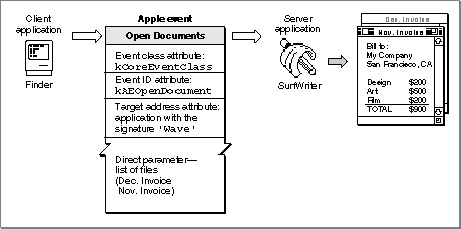
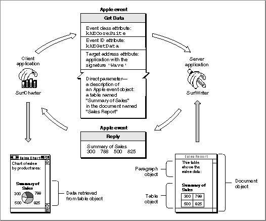

Apple Event Attributes and Parameters
When an application creates and sends an Apple event, the Apple Event Manager uses arguments passed to Apple Event Manager routines to construct the data structures that make up the Apple event. An Apple event consists of attributes (which identify the Apple event and denote its task) and, often, parameters (which contain information to be used by the target application).An Apple event attribute is a record that identifies the event class, event ID, target application, or some other characteristic of an Apple event. Taken together, the attributes of an Apple event denote the task to be performed on any data specified in the Apple event's parameters. A client application can use Apple Event Manager routines to add attributes to an Apple event. After receiving an Apple event, a server application can use Apple Event Manager routines to extract and examine its attributes.
An Apple event parameter is a record containing data that the target application uses. Unlike Apple event attributes (which contain information that can be used by both the Apple Event Manager and the target application), Apple event parameters contain data used only by the target application. For example, the Apple Event Manager uses the event class and event ID attributes to identify the server application's handler for a specific Apple event, and the server application must have a handler to process the event identified by those attributes. By comparison, the list of documents contained in a parameter to an Open Documents event is used only by the server application. As with attributes, a client application can use Apple Event Manager routines to add parameters to an Apple event, and a server application can use Apple Event Manager routines to extract and examine the parameters of an Apple event it has received.
Note that Apple event parameters are different from the parameters of Apple Event Manager functions. Apple event parameters are records used by the Apple Event Manager; function parameters are arguments you pass to the function or that the function returns to you. You can specify both Apple event parameters and Apple event attributes in parameters to Apple Event Manager functions. For example, the
AEGetParamPtrfunction uses a buffer to return the data contained in an Apple event parameter. You can specify the Apple event parameter whose data you want in one of the parameters of theAEGetParamPtrfunction.Apple Event Attributes
Apple events are identified by their event class and event ID attributes. The event class is the attribute that identifies a group of related Apple events. The event class appears in themessagefield of the event record for an Apple event. For example, the four required Apple events have the value'aevt'in themessagefields of their event records. The value'aevt'can also be represented by thekCoreEventClassconstant. Several event classes are shown here:The event ID is the attribute that identifies the particular Apple event within its event class. In conjunction with the event class, the event ID uniquely identifies the Apple event and communicates what action the Apple event should perform. (The event IDs appear in the
wherefield of the event record for an Apple event. For more information about event records, see the chapter "Event Manager" in Inside Macintosh: Macintosh Toolbox Essentials.) For example, the event ID of an Open Documents event has the value'odoc'(which can also be represented by thekAEOpenDocumentsconstant). ThekCoreEventClassconstant in combination with thekAEOpenDocumentsconstant identifies the Open Documents event to the Apple Event Manager.Here are the event IDs for the four required Apple events:
In addition to the event class and event ID attributes, every Apple event must include an attribute that specifies the target application's address. Remember that the target application is the one addressed to receive the Apple event. Your application can send an Apple event to itself or to another application (on the same computer or on a remote computer connected to the network).
Every Apple event must include event class, event ID, and target address attributes. Some Apple events can include other attributes; see "Keyword-Specified Descriptor Records," which begins on page 3-12, for a complete list.
Apple Event Parameters
As with attributes, there are various kinds of Apple event parameters. A direct parameter usually specifies the data to be acted upon by the target application. For example, the direct parameter of the Print Documents event contains a list of documents. Some Apple events also take additional parameters, which the target application uses in addition to the data specified in the direct parameter. Thus, an Apple event for arithmetic operations might include additional parameters that specify operands in an equation.The Apple Event Registry: Standard Suites describes all parameters as either required or optional. A required parameter is one that must be present for the target application to carry out the task denoted by the Apple event. An optional parameter is a supplemental Apple Event parameter that also can be used to specify data to the target application. Optional parameters need not be included in an Apple event; default values for optional parameters are part of the event definition. The target application that handles the event must supply default values if the optional parameters are omitted.
Direct parameters are usually defined as required parameters in the Apple Event Registry: Standard Suites; additional parameters may be defined as either required or optional. However, the Apple Event Manager does not enforce the definitions of required and optional events. Instead, the source application specifies, when it sends the event, which Apple event parameters the target can treat as if they were optional.
For more information about optional parameters, see "Specifying Optional Parameters for an Apple Event," which begins on page 5-7.
Interpreting Apple Event Attributes and Parameters
Figure 3-3 shows the major Apple event attributes and direct parameter for the Open Documents event introduced in Figure 3-1.Figure 3-3 Major attributes and direct parameter of an Open Documents event

When the SurfWriter application receives any high-level event, it calls the
AEProcessAppleEventfunction to process the event. For an Apple event such as the Open Documents event shown in Figure 3-3, theAEProcessAppleEventfunction uses the event class and event ID attributes to dispatch the event to the SurfWriter application's Open Documents handler. In response, the Open Documents handler opens the documents specified in the direct parameter.The definition of a given Apple event in the Apple Event Registry: Standard Suites suggests how the source application can organize the data in the Apple event's parameters and how the target application interprets that data. The data in an Apple event parameter may use standard or private data types and may include a description of an Apple event object. Each Apple event handler provided by an application should be written with the format of the expected data in mind.
Apple events can use standard data types, such as strings of text, long integers, Boolean values, and alias records, for the corresponding data in Apple event parameters. For example, the Get Data event can contain an optional parameter specifying the form in which the requested data should be returned. This optional parameter always consists of a list of four-character codes denoting desired descriptor types in order of preference. Apple events can also use special data types defined by the Apple Event Manager.
Apple event parameters often contain descriptions of Apple event objects. These descriptions make use of a standard classification scheme summarized in "The Classification of Apple Event Objects," which begins on page 3-33.
For example, every Get Data event includes a required parameter that describes the Apple event object containing the data requested by the client application. Thus, one application can send a Get Data event to another application, requesting, for instance, one paragraph of a document, the first and last paragraphs of a document, all pictures in the document, all paragraphs containing the word "sales," or pages 10 through 12 of the document.
Figure 3-4 shows the Apple event attributes and direct parameter for the Get Data event introduced in Figure 3-2. The direct parameter for the Get Data event sent by the SurfCharter application describes the requested Apple event object as a table called "Summary of Sales" in the document "Sales Report." Both the table and the document are Apple event objects. The description of an Apple event object always includes a description of its location. In most cases, Apple event objects are located inside other Apple event objects.
Figure 3-4 Major attributes and direct parameter of a Get Data event

To process the information in the Get Data event, the SurfWriter application calls the
AEProcessAppleEventfunction. TheAEProcessAppleEventfunction uses the event class and event ID attributes to dispatch the event to the SurfWriter application's handler for the Get Data Apple event. The SurfWriter application responds to the Get Data event by resolving the description of the Apple event object--that is, by using theAEResolvefunction, other Apple Event Manager routines, and its own application-defined functions to locate the table named "Summary of Sales." After locating the table, SurfWriter adds a copy of the table's data to the reply event, which the Apple Event Manager then sends to the SurfCharter application. The SurfCharter application then displays the data in its active window.The next section, "Data Structures Within Apple Events," describes the data structures the Apple Event Manager uses for Apple event attributes and parameters.